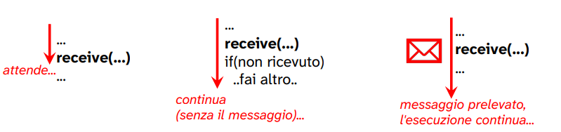
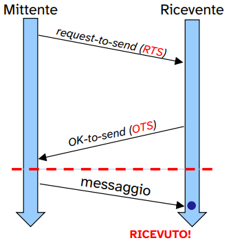
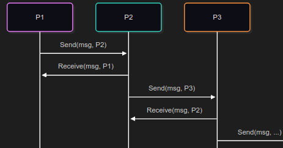

Sincronizzazione nel modello ad ambiente locale
Il modello ad ambiente locale si riferisce ad una struttura in cui ogni processo opera nel proprio ambiente privato, senza alcuna memoria condivisa tra vari processi.
In questo modello tutte le risorse sono privare a ciascun processo e non possono essere modificate direttamente da altri processi.
Questo è un approccio tipico dei sistemi distribuiti.
Quindi ogni processo evolve in un proprio ambiente:
- non esiste memoria condivisa;
- le risorse sono tutte private;
- Non possono esser modificate direttamente da altri processi.
Il naturale supporto fisico a questo modello, come detto, sono i sistemi con architettura distribuita.

Nota:
Il middleware è un software intermedio che si trova “in mezzo” tra:
-
sistema operativo
e
-
le applicazioni che si trovano su macchine diverse.
Il suo compito è nascondere le differenze tra:
- sistema operativi diversi
- linguaggi di programmazione diversi
- reti e architetture hardware diverse
Quindi serve a creare un ambiente uniforme di comunicazione, in modo che due programmi possano scambiarsi dati come se lavorassero nello stesso sistema.
Noi faremo tutto in locale → con le mailbox System V permetteremo ai processi di comunicare su canali di comunicazione che saranno delle shared memory.
La cooperazione si realizza mediante lo scambio diretto di messaggi per mezzo di primitive fornite dal S.O.
In questo modello la mutua esclusione sulle risorse di un processo è garantita, appunto perché tutte le risorse sono private.
Primitive
Per gestire quindi la cooperazione in un modello ad ambiente locale abbiamo la necessità di due tipologie di primitive:
- send(destination, message)
- receive(source, message)
Variano fra i sistemi in base a due caratteristiche fondamentali:
- tipo di sincronizzazione dei processi comunicanti;
- indirizzamento: la modalità con cui si designano la provenienza e la destinazione.
La semantica di un messaggio è composta:

Operiamo sull’intestazione per gestire la comunicazione.
- Tipo di messaggio: discrimina il tipo di messaggio contenuto all’interno del corpo;
- informazioni di controllo: ci permettono di modificare la semantica dell’interazione tra i processi.
L’intestazione è usata dal sistema operativo per gestire e instradare la comunicazione.
Mentre il corpo contiene le informazioni scambiate tra i processi.
Send
La primitiva send può avere diverse caratteristiche a seconda del sistema operativo. In particolare il comportamento della primitiva piò essere di due tipi:
- sincrono: il processo che esegue la send rimane in attesa fin quando il messaggio non è stato ricevuto dal destinatario. Dopo la conferma di avvenuta ricezione il processo chiamante viene sbloccato;
- asincrono: il processo che esegue la send continua la sua esecuzione, senza attendere l’avvenuta ricezione del messaggio.

System V linux di default ci garantisce l’implementazione di una send asincrona.
Quindi per implementare la send sincrona dobbiamo sfruttare la send asincrona e la receive.
Receive
Analogamente alla primitiva send, la primitiva receive ha caratteristiche differenti a seconda del sistema operativo. In particolare può avere un comportamento di due tipi:
- bloccante: se il messaggio non è stato ancora inviato, il processo rimane in attesa fino alla ricezione;
- non bloccante: il processo continua la sua esecuzione senza attendere l’avvenuta consegna del messaggio.
Ovviamente se il sender ha già inviato il messaggio, il processo lo riceve e continua l’esecuzione senza sospendersi.

System V linux di default ci garantisce l’implementazione di una receive bloccante.
Quando si parla di blocco e sblocco ci si riferisce ai possibili stati di un processo.
Tipi di sincronizzazione
Quindi a seconda del comportamento delle primitive di send e receive tra il sender e il receiver possono avere tre diverse combinazioni che in genere vengono utilizzate.
-
Send sincrona, receive bloccante
- stretta sincronizzazione tra sender e receiver;
- entrambi in attesa della consegna del messaggio, entrambi si bloccano nella comunicazione;
- denominato anche “rendezvous”.
-
Send asincrona, receive bloccante
- il sender continua a eseguire dopo l’invio;
- il receiver rimane in attesa fino a che non riceve il messaggio.
-
Send asincrona, receive asincrona
- Nessuna delle due parti, sender e receiver, rimane in attesa della consegna;
- completo disaccoppiamento tra mittente e destinatario;
- tipo sincronizzazione è il più comune tra processi distribuiti, non conosciamo il momento in cui il destinatario o il sorgete è pronto.
Send asincrona e receive bloccante sono quelle che si trovano più spesso nei sistemi operativi e linguaggi di programmazione.
Implementazione di una send sincrona a mezzo di send asincrona
Siamo in grado di implementare una send sincrona utilizzando send asincrona + receive bloccante (default di System V linux).
La send sincrona è utile quando il mittende deve conoscere se il destinatario ha ricevuto o meno il messaggio.
→ il sender deve determinare se il messaggio è stato ricevuto e lo fa inviando dei messaggi aggiuntivi al messaggio contenente l’informazione da scambiare.

Quindi, tra mittente e destinatario, per la cominicazione sincrona è necessario che questi si scambino una serie di messaggi prima di inviare il messaggio contenente l’informazione.
-
Il sender dopo aver inviato una richiesta request-to-send si mette in attesa di una risposta da parte del destinatario.
-
Nel momento in cui il destinatario è pronto per la comunicazione invia una richiesta di OK-to-send al sender e a sua volta si mette in attesa per il messaggio.
-
Il sender una volta sbloccato invia la il messaggio effettivo.
Implementado questo scambio di messaggi tra sender e receiver è quindi possibile implementare quella che è una send sincrona.
Ovviamente questo procedura è da visualizzare in maniera atomica.
Implementazione tipo:
send
procedure sendSincrona(dest, mess){
sendAsincrona(dest, messRTS)
// messRTS è un messaggio di "pronto ad inviare"
receiveBloccante(dest, messOTS)
// messOTS è un messaggio di "pronto a ricevere"
sendAsincrona(dest, mess)
}
receive
procedure receive(source, mess){
receiveBloccante(source, messRTS)
// il ricevente si blocca sulla ricezione di un messaggio
// di richiesta di invio
sendAsincrona(source, messOTR)
// una volta ricevuto invia un messaggio inivia un messaggio
// che sintetizza l'accettazione da parte del destinatario
// di ricevere il messaggio
receiveBloccante(source, mess);
}
Utilizzando procedure per il sender e per il receiver aventi tale workflow possiamo implementare una send avente un comportamento sincrono.

Ovviamente il ricevente potrebbe essere già pronto per la ricezione di un messaggio RTS ancor prima che questo venga inviato;
in questa situazione il receiver è già sospeso e alla ricezione del messaggio si sblocca e invia il messaggio di risposta.
Indirizzamento
Mi peremtte di specificare la destinazione e la provenienza della gestione del messaggio.
In che modo posso specificare mittente e destinatario?
Esistono più modi:
-
comunicazione diretta simmetrica
sia il mittente che il destinatario specificano l’identificativo dell’altro.
- mittente specifica il PID del destinatario nella send();
- destinatario specifica il PID del mittente nella receive().
-
comunicazione diretta asimmetrica
- il mittente esplicita il PID del destinatario nella send();
- il destinatario non indica un PID, viene a conoscenza del PID del mittente alla ricezione del messaggio, tramite parametro di uscita (specificato all’interno dell’intestazione del messaggio).
-
comunicazione indiretta
- il mittente fa riferimento ad una mailbox nella send();
- il destinatario fa riferimento alla stessa mailbox, da cui preleva il messaggio tramite receive().
Questa ultima comunicazione indiretta fa riferimento a ciò che viene implementato e fornito da Linux che sfruttano le mailbox System V
Mittente e destinatario fanno riferiemento ad un nodo intermendio.
ESEMPI:
COMUNICAZIONE DIRETTA
comunicazione diretta simmetrica: schema a pipeline

comunicazione diretta asimmetrica: schema client-server

COMUNICAZIONE INDIRETTA
I messaggi vengono inviati ad una struttura dati condivisa (detta coda o mailbox)
Il vantaggio di questo tipo di comunicazione è che sender e receiver sono indipendenti, per la presenza della mailbox.
Possibili schemi di implementazione:
- one-to-one
- one-to-many
- many-to-one
- many-to-many

Infine possiamo quindi avere diversi modelli di comunicazione ad ambiente locale che sono determinati dalla combinazione tra le tipologie di sincronizzazione che possiamo ottenere e i possibili indirizzamenti utilizzabili.